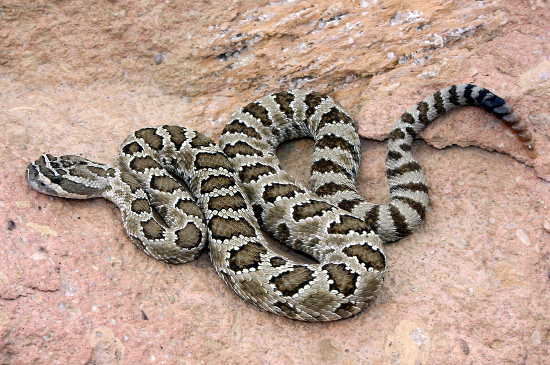
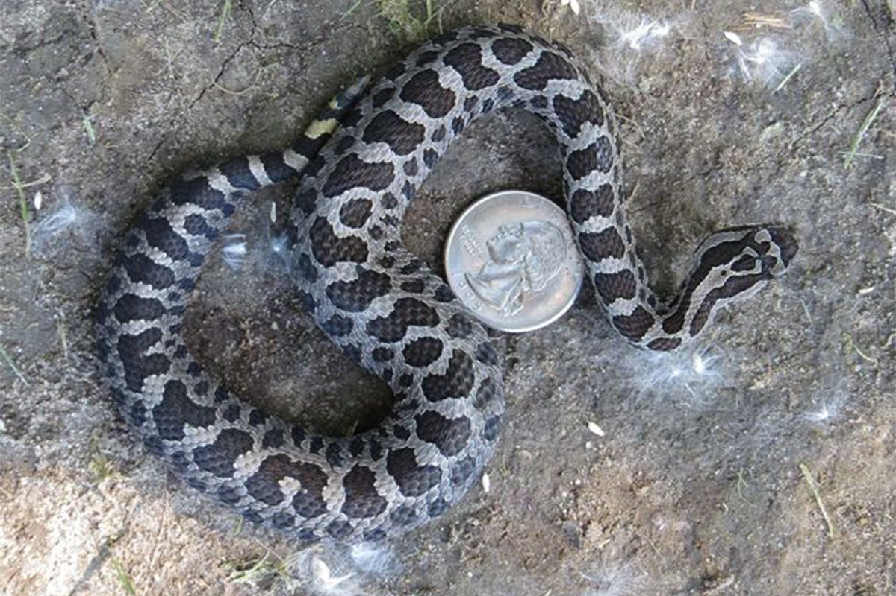
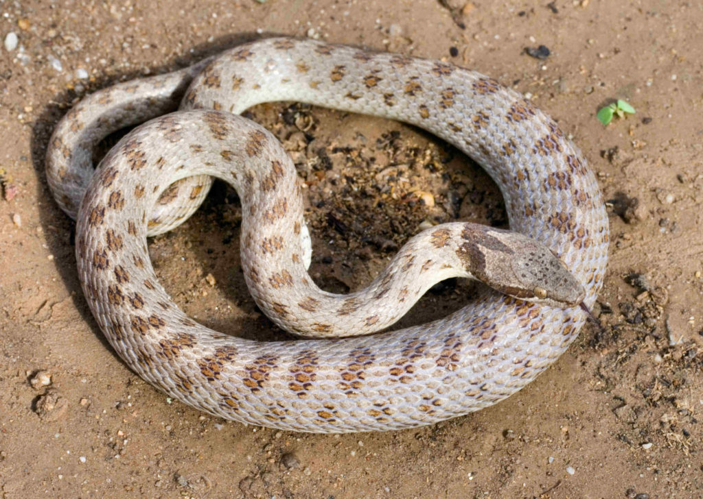

Here are the top 4 most dangerous snakes in Canada:
(Click on the image or text to view more information about the snake)
1. Western Rattlesnake

2. Massasauga

3. Prairie Rattlesnake

4. (Desert) Nightsnake

To view all snakes in Canada, please click here.